A nice ICE story
Today I’m going to take you on a trip from my home at south-west Jaravy to my work in central Uherské Hradiste. It is a long tri by train, but I’ve got to do something to earn some money ;).
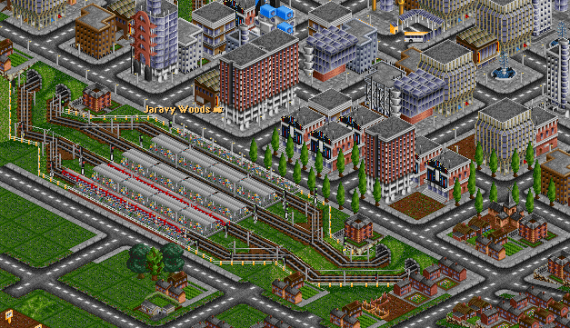 |
We start our story here, at Jaravy Woods, we just live south of the station and we want to go to our work in Uherské Hradiste. We’ll enter this SBahn station to get to the central ICE station of Jaravy. | |
| Here we pass Jaravy Branch, another SBahn station. It has a nice forest next to it for recreative purposes. | 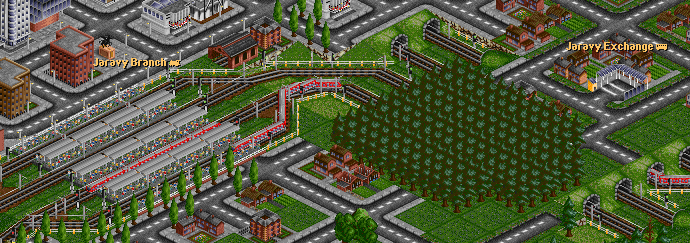 |
|
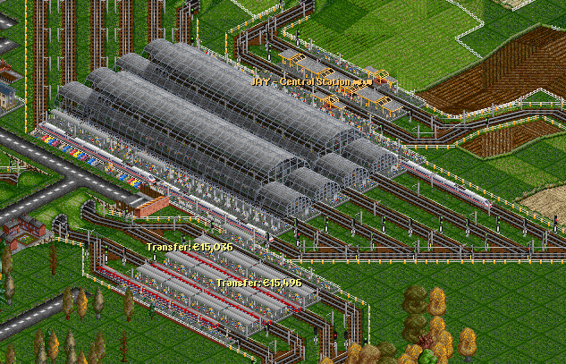 |
Here we arive at Jaravy’s Central Station, our ICE is already waiting for us so we have to hurry! | |
| We’re passing the mainline here, the ICE passes it because we enter it somewhere else. The mainline can only be accessed there from the other side of it. | 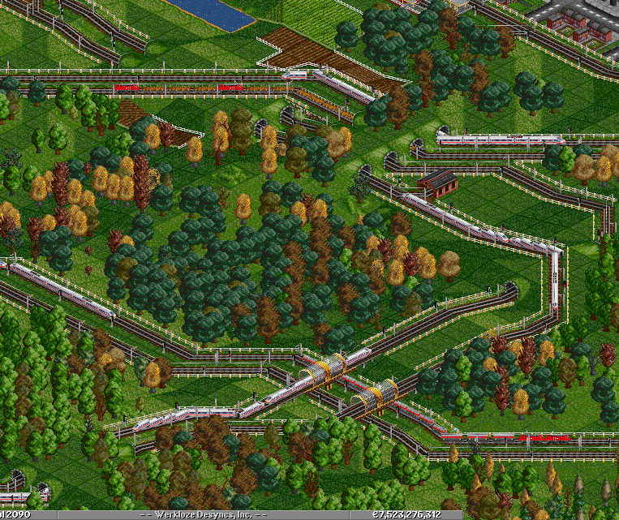 |
|
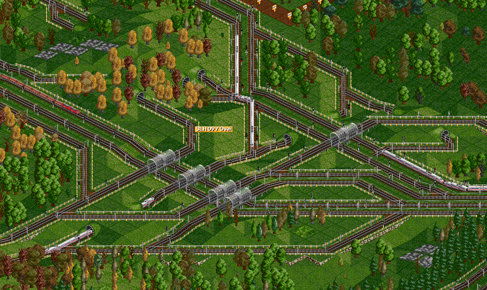 |
We’re entering SideLine Hub 9 here, it allows us to enter the mainline, or enter the sideline if we’re comming from the mainline. SideLine Hub 9 has been build by Osai. | |
| This big junction is called BackBone Hub 2, it was build by me and it can handle quite some traffic due to it’s size. We can also see a bit of Jaravy from here. | 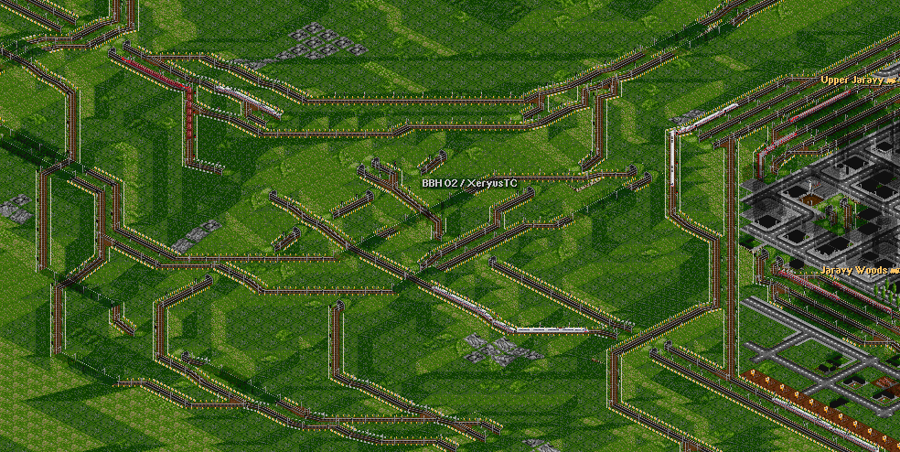 |
|
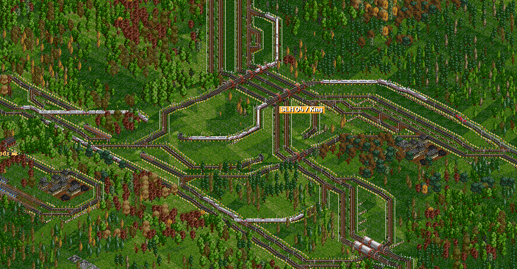 |
We’re now on SideLine Hub 4, which was build by King, it is quite a nice hub as the mainline is in the valley and the sideline is on the top of the hill. We’re entering the sideline here because we need to go to a transfer station. | |
| Sokice is one of the first cities connected to the network, it is also one of the few cities which has two one-way SBahn rings. | 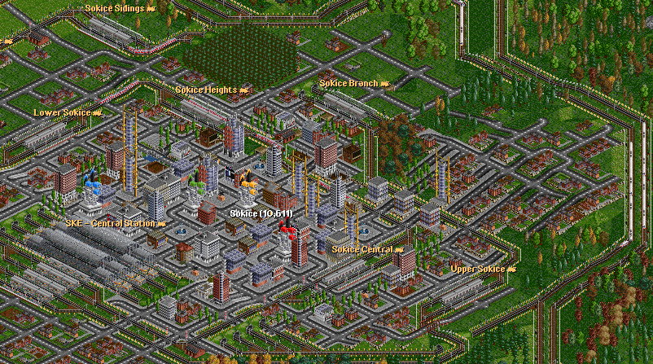 |
|
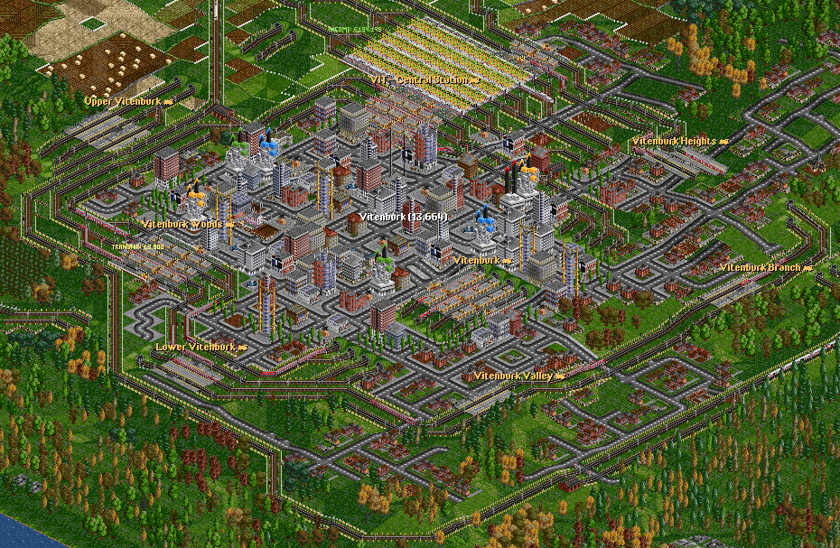 |
Here we arive at Vitenbork, VIT – Central Station is our transfer station, we’ll transfer to another ICE here. | |
| We’re passing SideLine Hub 4 again, this time from the top of the hill so we can see every part of the hub. Notice that the traffic is a bit lower now. | 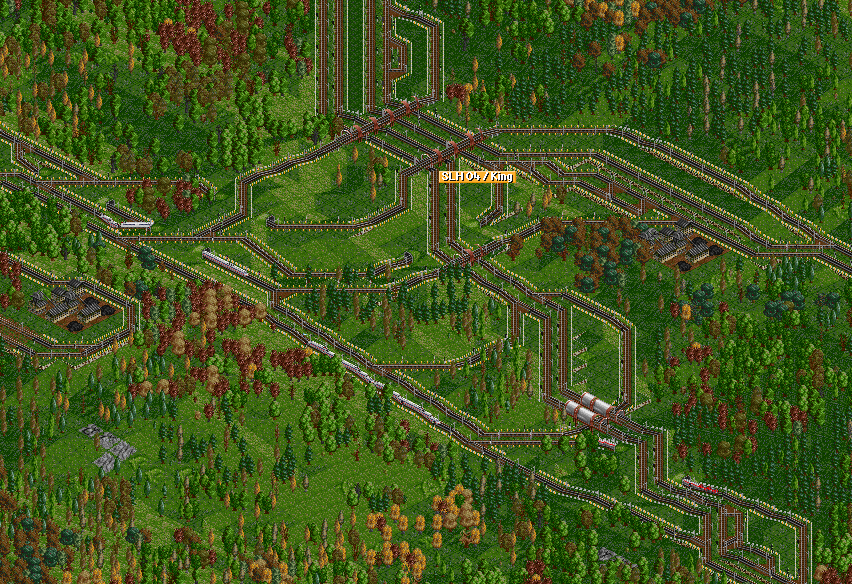 |
|
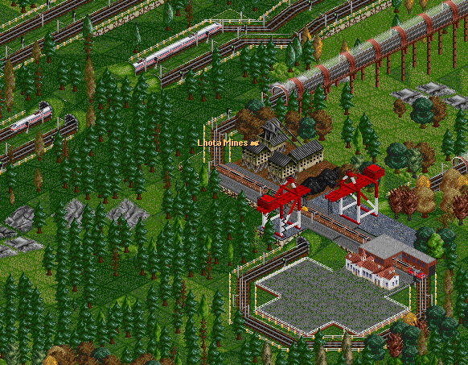 |
Lhota Mines is a nice station, not because of it’s design but because we discovered a bug here, the bug is a bit to complecated to explain here. | |
| Here we see BackBone Hub 1, which is the oldest hub in the network and has been build by Mucht. We’ll go southward from here. | 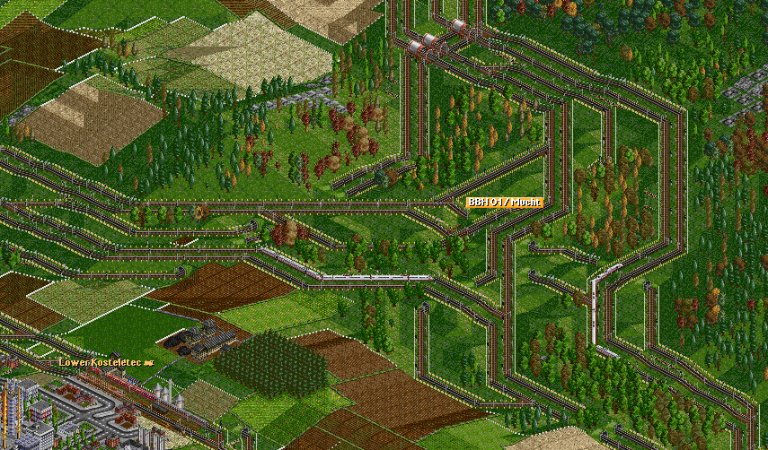 |
|
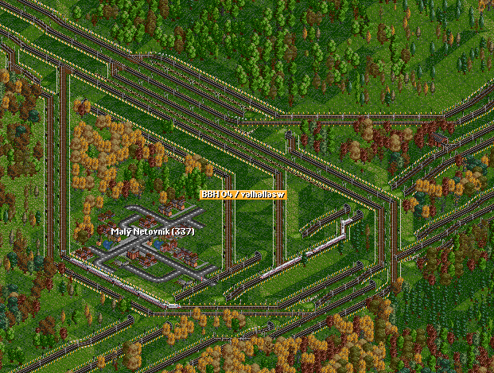 |
We’re at BackBone Hub 4 now, it has been made by valhallasw, who only made a few things in this network. This hub was meant to be the central hub and should have gotten most of the traffic, but it didn’t work out that way and it is barely used now. | |
| SideLine Hub 8 is a hub that forces traffic to come from BackBone Hub 4 to get some traffic there, the hub was made by me and is one of the simplest hubs in the network. Our destination lies just a few tiles east of this hub. | 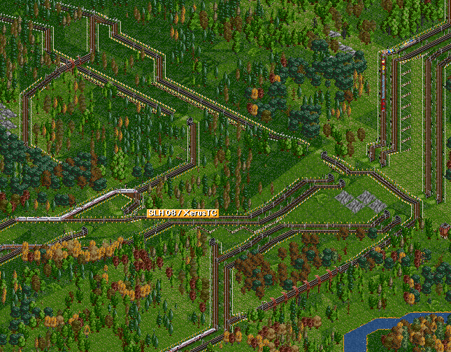 |
|
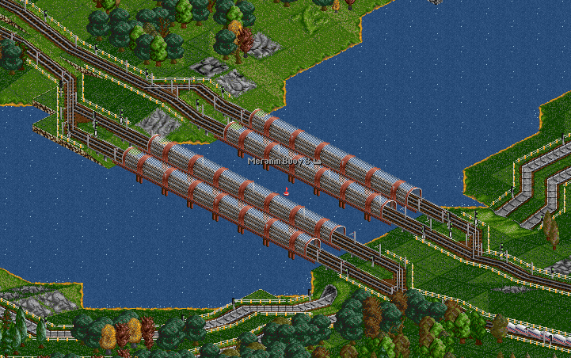 |
Here we cross a river to get to our last transfer station so we can get on the TransRapid shuttle to Uherské Hradiste. | |
| Here we are at MeranÃn, it is one of the latest cities connected to the network but it has already grown quite big. We’ll get onto the TransRapid shuttle here. | 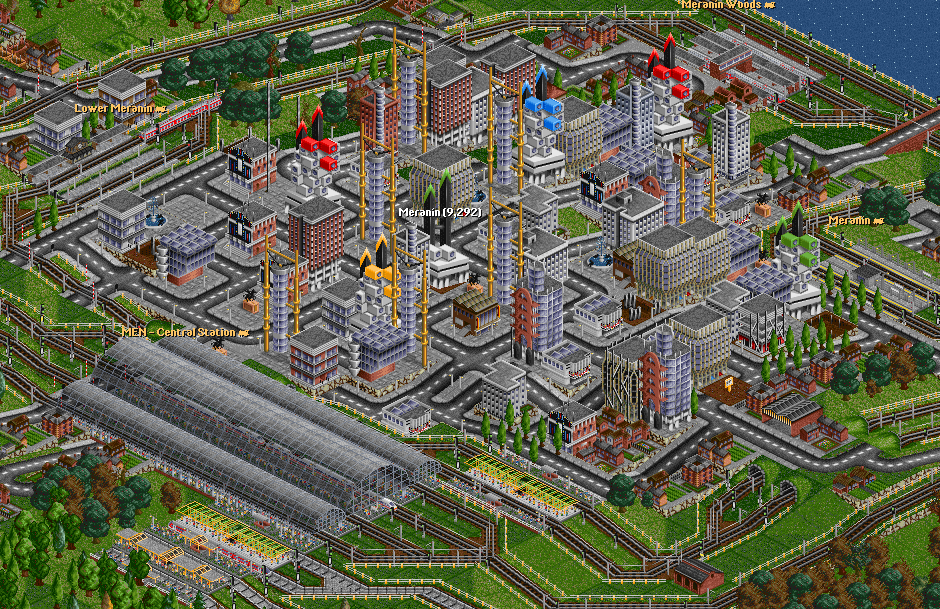 |
|
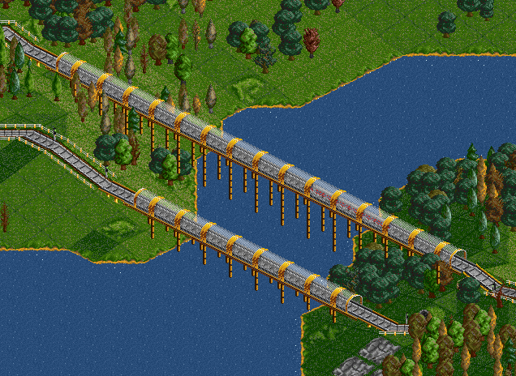 |
The TransRapid shuttle has just been expanded to a double line shuttle as traffic became quite big on it. We’re crossing the river here again because our destination lies on the other side of the river than MeranÃn. | |
| Here we see the split of the TransRapid shuttle, it has just been expanded to a 2 city shuttle, we’re entering the tunnel here which leads directly to our last train station. | 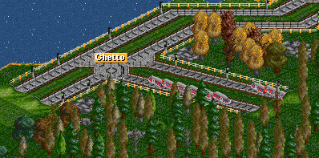 |
|
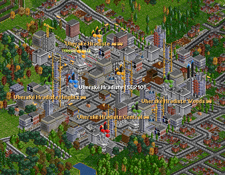 |
This is our destination city, Uherské Hradiste. We’ll transfer to a bus here so we can get to out office building quicker. | |


Categories: Member Zone
Zavior August 7, 2006 10:33
Nice story!
Too bad the pictures arent clickable :
XeryusTC August 7, 2006 12:20
I’ve fixed the clickability, and also fixed the layout a bit, I couldn’t get it to work properly yesterday.
Death August 7, 2006 12:24
explain the bug pls 😀
Volny CZ August 7, 2006 12:49
Uherske Hradiste? Arent you Czech? byl jsi na filmovce? vyborna akce!
XeryusTC August 7, 2006 20:28
No I ain’t, it was some scenario that we played with on the mainserver.
Scia August 8, 2006 08:42
Indeed nice pictures. It is nice to see people playing BigRiver (a map I made) :). Would you be so kind to post a savegame too?
XeryusTC August 8, 2006 10:17
You can always find savegames at http://openttdcoop.ppcis.org/wiki/index.php/Mainserver:Archive
Toni Babelony August 11, 2006 22:08
Those are some amazing HUB’s! Too complicated to build for me… Requires too much terraforming 😉
XeryusTC August 11, 2006 22:16
Actually, this was a low terraform game and we didn’t do much terraforming at all :).
The #openttdcoop Blog » Blog Archive » The New Mainserver Game - Next Generation January 5, 2007 21:31
[…] Do you remember our Werkloze Desyncs, Inc. Game on the Mainserver, based on the Big River Scenario? Today we started a new game, with a similar plan, but even more impressive. I call this type of game coop_NG, because the rules expand those of the Big River Game. Here a short overview (more Details and an exact formulation will follow soon at our Wiki) […]